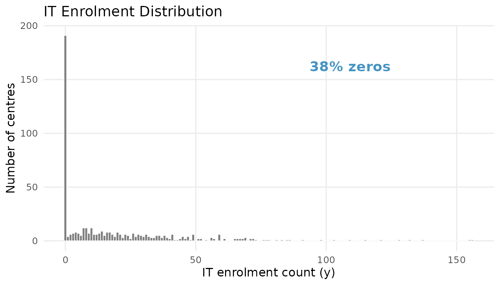
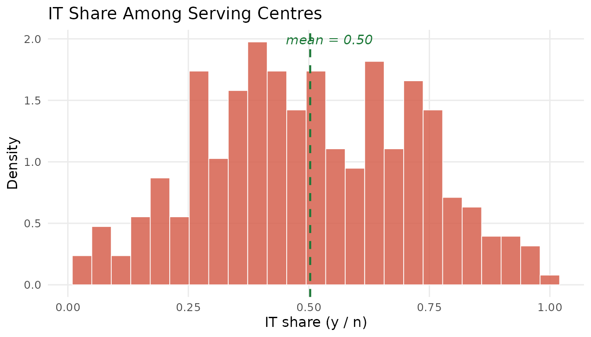
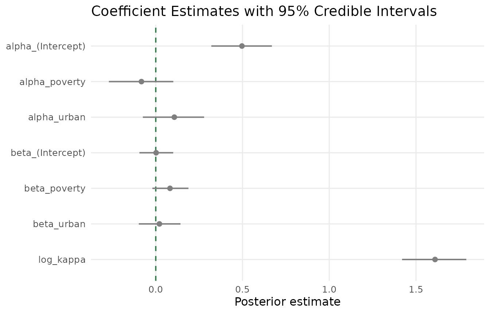
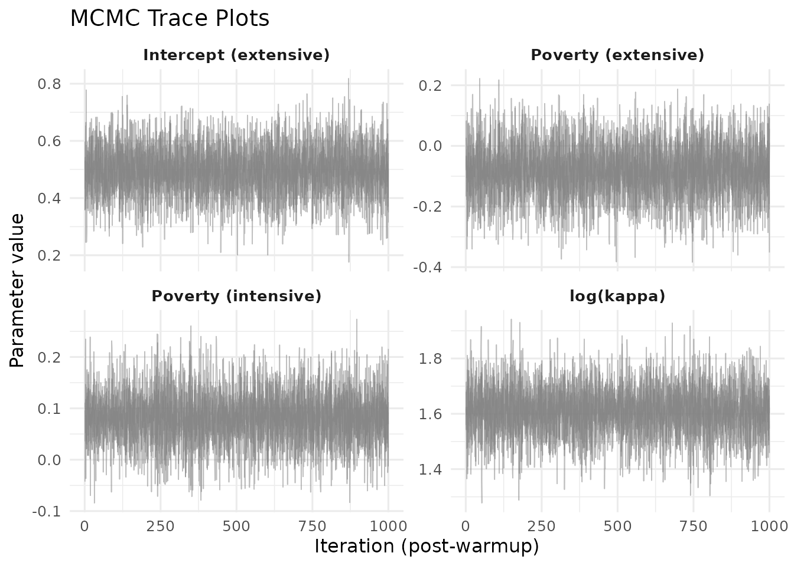
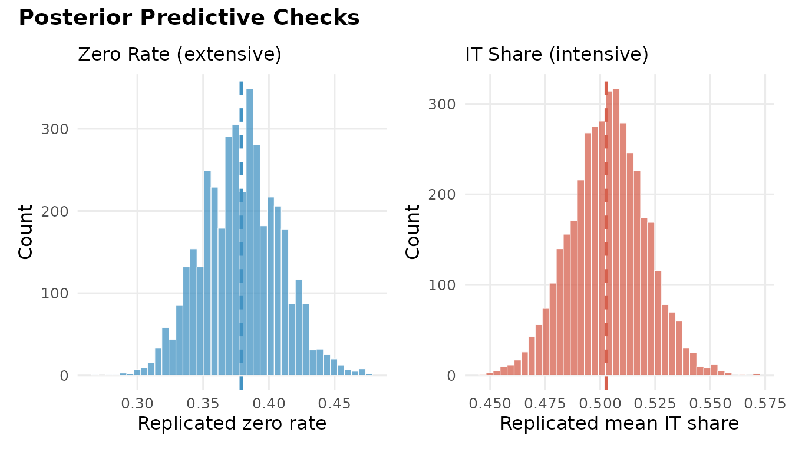
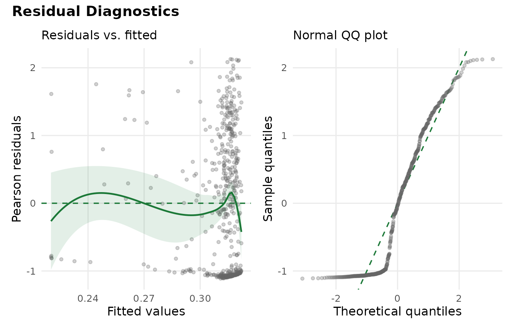

Getting Started with hurdlebb
JoonHo Lee
2026-02-28
Source:vignettes/01-getting-started.Rmd
01-getting-started.RmdOverview
Many childcare datasets share a common structure: a large fraction of providers do not serve a particular age group at all, while those that do vary widely in how many children they enrol. Standard regression models struggle with this combination of excess zeros and bounded, overdispersed counts. The hurdlebb package provides a principled solution through the Hurdle Beta-Binomial model — a two-part framework that separates the decision to participate from the intensity of participation.
In this vignette you will learn how to:
- Explore a childcare enrolment dataset and recognize why a two-part model is needed.
-
Specify a Hurdle Beta-Binomial model using the
hbb()formula interface. - Interpret the model summary, paying special attention to how the same covariate can push in opposite directions across the two margins.
- Diagnose convergence with MCMC trace plots.
- Evaluate model fit through posterior predictive checks (PPC).
- Compare models using approximate leave-one-out cross-validation (LOO).
- Extract fitted values and residuals for further diagnostics.
Because the MCMC sampler can take several minutes, this vignette uses pre-computed results that ship with the package. Every fitting command is shown so you can reproduce the analysis on your own machine, but the displayed output comes from saved objects.
The Data
The package includes nsece_synth_small, a synthetic
dataset modelled after the 2019 National Survey of Early Care and
Education (NSECE). It contains 504 centre-based childcare providers
drawn from 51 states (including DC).
data("nsece_synth_small", package = "hurdlebb")
str(nsece_synth_small)
#> 'data.frame': 504 obs. of 13 variables:
#> $ provider_id: int 1 2 3 4 5 6 7 8 9 10 ...
#> $ state_id : int 1 1 1 1 1 1 2 2 2 3 ...
#> $ y : int 13 0 28 0 0 3 0 12 28 0 ...
#> $ n_trial : int 33 33 38 75 272 12 87 21 38 36 ...
#> $ z : int 1 0 1 0 0 1 0 1 1 0 ...
#> $ it_share : num 0.394 0 0.737 0 0 ...
#> $ poverty : num 11.16 22.1 22.45 8.69 7.88 ...
#> $ urban : num 77.4 99 99.9 13.9 100 ...
#> $ black : num 20.0701 0.0334 7.3676 2.8377 9.394 ...
#> $ hispanic : num 12.98 10.75 16.82 7.24 2.66 ...
#> $ weight : num 57.49 19 6.12 15.2 42.76 ...
#> $ stratum : int 22 22 22 22 22 22 7 7 7 9 ...
#> $ psu : int 378 382 379 382 382 381 227 233 229 258 ...Each row is a provider. The key columns are:
| Column | Description |
|---|---|
y |
Number of infant/toddler (IT) children enrolled |
n_trial |
Total capacity (children age 0–5) |
z |
Binary: does the centre serve any IT children? |
it_share |
Ratio y / n_trial (0 for non-servers) |
poverty |
Neighbourhood poverty rate |
urban |
Urban location indicator |
Two features of this dataset motivate the Hurdle Beta-Binomial approach. First, a substantial share of centres do not serve infants or toddlers at all:
cat("Structural zeros:", sum(nsece_synth_small$z == 0), "of",
nrow(nsece_synth_small),
sprintf("(%.0f%%)\n", 100 * mean(nsece_synth_small$z == 0)))
#> Structural zeros: 191 of 504 (38%)Second, among centres that do serve IT children, the enrolment share varies considerably:
servers <- nsece_synth_small[nsece_synth_small$z == 1, ]
summary(servers$it_share)
#> Min. 1st Qu. Median Mean 3rd Qu. Max.
#> 0.02941 0.33735 0.48750 0.50275 0.67500 1.00000This combination — a spike at zero plus a dispersed distribution over — is the hallmark of a hurdle problem. The plots below make the pattern vivid.
if (requireNamespace("ggplot2", quietly = TRUE)) {
library(ggplot2)
dat <- nsece_synth_small
dat$group <- ifelse(dat$y == 0, "Zero", "Positive")
zero_pct <- sprintf("%.0f%% zeros", 100 * mean(dat$y == 0))
ggplot(dat, aes(x = y, fill = group)) +
geom_histogram(binwidth = 1, boundary = -0.5, colour = "white",
linewidth = 0.3) +
scale_fill_manual(
values = c(Zero = pal["extensive"], Positive = pal["intensive"]),
guide = "none"
) +
annotate("text", x = max(dat$y) * 0.7, y = sum(dat$y == 0) * 0.85,
label = zero_pct, size = 5, fontface = "bold",
colour = pal["extensive"]) +
labs(x = "IT enrolment count (y)", y = "Number of centres",
title = "IT Enrolment Distribution") +
theme_minimal(base_size = 12) +
theme(panel.grid.minor = element_blank())
}
#> Warning: No shared levels found between `names(values)` of the manual scale and the
#> data's fill values.
IT enrolment distribution. The spike at zero (blue) reflects centres that do not serve infants and toddlers. Positive counts (red) show the enrolment distribution among participating centres.
if (requireNamespace("ggplot2", quietly = TRUE)) {
mean_share <- mean(servers$it_share, na.rm = TRUE)
ggplot(servers, aes(x = it_share)) +
geom_histogram(aes(y = after_stat(density)), bins = 25,
fill = pal["intensive"], colour = "white",
linewidth = 0.3, alpha = 0.85) +
geom_vline(xintercept = mean_share, linetype = "dashed",
colour = pal["reference"], linewidth = 0.8) +
annotate("text", x = mean_share + 0.04, y = Inf, vjust = 1.5,
label = sprintf("mean = %.2f", mean_share),
colour = pal["reference"], size = 4, fontface = "italic") +
labs(x = "IT share (y / n)", y = "Density",
title = "IT Share Among Serving Centres") +
theme_minimal(base_size = 12) +
theme(panel.grid.minor = element_blank())
}
IT share among serving centres. The Beta-like distribution motivates the Beta-Binomial intensive margin.
Specifying the Model
The Hurdle Beta-Binomial decomposes the outcome into two parts:
- Part 1 (Extensive margin): A Bernoulli model for whether the centre serves IT children at all. The participation probability is linked to covariates through a logit: .
- Part 2 (Intensive margin): A zero-truncated Beta-Binomial for the number of IT children enrolled, conditional on serving at least one. The expected IT share is also linked to covariates through a logit: , with a dispersion parameter .
In hurdlebb, you specify both margins through a
single formula. The left-hand side uses the
y | trials(n_trial) syntax to declare the count and its
upper bound:
# This is the code you would run (takes ~2-4 minutes):
fit <- hbb(
y | trials(n_trial) ~ poverty + urban,
data = nsece_synth_small,
chains = 4,
seed = 42
)The same set of predictors (poverty and
urban) enters both the extensive-margin equation
(coefficients
)
and the intensive-margin equation (coefficients
).
This shared-covariate design makes it straightforward to compare whether
a variable pushes participation and intensity in the same or opposite
directions.
Loading Pre-computed Results
For this vignette we load saved output instead of running the sampler:
results <- readRDS(find_extdata("vig01_results.rds"))The print() method gives a compact overview:
cat(paste(results$print_text, collapse = "\n"))
#> Hurdle Beta-Binomial Model Fit
#> ==============================
#>
#> Model type : Base (no random slopes, unweighted)
#> Stan model : hbb_base
#> Formula : y | trials(n_trial) ~ poverty + urban
#>
#> Observations (N) : 504
#> Covariates (P) : 3 (intercept + 2 predictors)
#> Zero rate : 0.379
#> Survey weights : no
#>
#> MCMC:
#> Chains : 4
#> Warmup : 1000
#> Sampling : 1000
#> Total draws : 4000
#> Elapsed : 2.8 seconds
#>
#> Diagnostics:
#> Divergent transitions : 0 [OK]
#> Max treedepth hits : 0 [OK]
#> E-BFMI : 1.033, 1.018, 1.029, 0.973
#> Max Rhat : 1.0049 [OK]
#> Min bulk ESS : 1780 [OK]
#> Min tail ESS : 2156 [OK]
#>
#> Use summary() for parameter estimates.Model Summary
The summary() output presents posterior means, standard
deviations, and 95% credible intervals for every parameter:
cat(paste(results$summary_text, collapse = "\n"))
#>
#> ============================================================
#> Hurdle Beta-Binomial Model Summary
#> ============================================================
#>
#> Model type : Base (unweighted)
#> Formula : y | trials(n_trial) ~ poverty + urban
#> Observations : 504
#> Zero rate : 37.9%
#> Inference : Posterior (MCMC)
#> Level : 0.95
#>
#> --------------------------------------------------
#> Extensive Margin (alpha)
#> --------------------------------------------------
#> Parameter Estimate SE CI_lower CI_upper Rhat ESS
#> alpha_(Intercept) 0.497 0.089 0.320 0.669 1.0012 5575
#> alpha_poverty -0.083 0.092 -0.270 0.101 1.0015 5376
#> alpha_urban 0.107 0.089 -0.075 0.279 1.0042 5540
#>
#> --------------------------------------------------
#> Intensive Margin (beta)
#> --------------------------------------------------
#> Parameter Estimate SE CI_lower CI_upper Rhat ESS
#> beta_(Intercept) 0.002 0.050 -0.094 0.101 1.0001 5408
#> beta_poverty 0.082 0.052 -0.020 0.188 1.0009 5905
#> beta_urban 0.021 0.061 -0.098 0.142 1.0024 6260
#>
#> --------------------------------------------------
#> Dispersion
#> --------------------------------------------------
#> kappa = 5.003 (log_kappa = 1.610, SE = 0.093)
#> kappa 95% CI: [4.136, 5.991]
#>
#> --------------------------------------------------
#> MCMC Diagnostics
#> --------------------------------------------------
#> Divergent transitions : 0 [OK]
#> Max treedepth hits : 0 [OK]
#> E-BFMI : 1.033, 1.018, 1.029, 0.973 [OK]
#> Max Rhat : 1.005 [OK]
#> Min ESS (bulk) : 1780 [OK]
#> Min ESS (tail) : 2156 [OK]Reading the coefficient table
The parameters fall into three groups:
- Extensive-margin coefficients (): Govern the log-odds of serving IT children. A positive means the covariate increases the probability of participation.
- Intensive-margin coefficients (): Govern the log-odds of IT share among servers. A positive means the covariate raises the expected fraction of capacity devoted to IT.
- Dispersion (): Controls extra-binomial variation. Larger means less overdispersion.
You can extract coefficients programmatically:
results$coef_both
#> alpha_(Intercept) alpha_poverty alpha_urban beta_(Intercept)
#> 0.49674813 -0.08263571 0.10699877 0.00201966
#> beta_poverty beta_urban log_kappa
#> 0.08204432 0.02102320 1.60996032Or select a single margin:
results$coef_ext # extensive margin (alpha)
#> alpha_(Intercept) alpha_poverty alpha_urban
#> 0.49674813 -0.08263571 0.10699877
results$coef_int # intensive margin (beta)
#> beta_(Intercept) beta_poverty beta_urban
#> 0.00201966 0.08204432 0.02102320The poverty reversal
The most striking pattern is the poverty covariate. The signs are opposite across the two margins:
cat(sprintf("Extensive margin (alpha_poverty): %+.3f\n",
results$coef_both["alpha_poverty"]))
#> Extensive margin (alpha_poverty): -0.083
cat(sprintf("Intensive margin (beta_poverty): %+.3f\n",
results$coef_both["beta_poverty"]))
#> Intensive margin (beta_poverty): +0.082Higher neighbourhood poverty is associated with lower probability of serving IT children (), yet among centres that do serve, higher poverty is associated with a larger IT share (). This poverty reversal is the central substantive finding: poverty discourages entry into IT care but intensifies enrolment among those that participate.
A standard single-equation model would blend these two opposing forces into one ambiguous coefficient. The hurdle framework lets us see each margin clearly.
Visualizing Coefficients
A forest plot displays all parameters with credible intervals,
coloured by margin. In a live session you would call
plot(fit, type = "coefficients").
if (requireNamespace("ggplot2", quietly = TRUE)) {
library(ggplot2)
fe <- results$summary_obj$fixed_effects
fe$margin_group <- ifelse(grepl("^alpha", fe$parameter), "Extensive",
ifelse(grepl("^beta", fe$parameter), "Intensive",
"Dispersion"))
fe$margin_group <- factor(fe$margin_group,
levels = c("Extensive", "Intensive", "Dispersion"))
fe$label <- fe$parameter
fe$label <- factor(fe$label, levels = rev(fe$label))
ggplot(fe, aes(x = estimate, y = label, colour = margin_group)) +
geom_vline(xintercept = 0, linetype = "dashed",
colour = pal["reference"], linewidth = 0.6) +
geom_pointrange(aes(xmin = ci_lower, xmax = ci_upper),
size = 0.5, linewidth = 0.7, fatten = 2.5) +
scale_colour_manual(
values = c(Extensive = pal["extensive"],
Intensive = pal["intensive"],
Dispersion = pal["dispersion"]),
name = "Margin"
) +
labs(x = "Posterior estimate", y = NULL,
title = "Coefficient Estimates with 95% Credible Intervals") +
theme_minimal(base_size = 12) +
theme(legend.position = "bottom",
panel.grid.minor = element_blank())
}
#> Warning: The `fatten` argument of `geom_pointrange()` is deprecated as of ggplot2 4.0.0.
#> ℹ Please use the `size` aesthetic instead.
#> This warning is displayed once per session.
#> Call `lifecycle::last_lifecycle_warnings()` to see where this warning was
#> generated.
#> Warning: No shared levels found between `names(values)` of the manual scale and the
#> data's colour values.
#> No shared levels found between `names(values)` of the manual scale and the
#> data's colour values.
Coefficient estimates with 95% credible intervals. Blue = extensive margin, red = intensive margin, purple = dispersion. The dashed green line marks zero. Note the opposing signs for poverty across the two margins.
MCMC Diagnostics
Before trusting any Bayesian result, we need to verify that the sampler has converged. The trace plot shows sampled values across iterations for each chain. Well-mixed chains should look like “hairy caterpillars” — dense, overlapping bands with no trends or drifts.
if (requireNamespace("ggplot2", quietly = TRUE)) {
library(ggplot2)
draws <- results$draws_df
key_params <- c("alpha[1]", "alpha[2]", "beta[2]", "log_kappa")
param_display <- c(
"alpha[1]" = "Intercept (extensive)",
"alpha[2]" = "Poverty (extensive)",
"beta[2]" = "Poverty (intensive)",
"log_kappa" = "log(kappa)"
)
trace_data <- do.call(rbind, lapply(key_params, function(p) {
data.frame(
iteration = draws$.iteration,
chain = factor(draws$.chain),
value = draws[[p]],
parameter = param_display[p],
stringsAsFactors = FALSE
)
}))
trace_data$parameter <- factor(trace_data$parameter,
levels = unname(param_display))
ggplot(trace_data, aes(x = iteration, y = value, colour = chain)) +
geom_line(alpha = 0.5, linewidth = 0.3) +
facet_wrap(~ parameter, scales = "free_y", ncol = 2) +
scale_colour_manual(
values = c("1" = pal["extensive"], "2" = pal["intensive"],
"3" = pal["reference"], "4" = pal["dispersion"]),
name = "Chain"
) +
labs(x = "Iteration (post-warmup)", y = "Parameter value",
title = "MCMC Trace Plots") +
theme_minimal(base_size = 12) +
theme(legend.position = "bottom",
strip.text = element_text(face = "bold", size = 10))
}
#> Warning in data.frame(iteration = draws$.iteration, chain =
#> factor(draws$.chain), : row names were found from a short variable and have
#> been discarded
#> Warning in data.frame(iteration = draws$.iteration, chain =
#> factor(draws$.chain), : row names were found from a short variable and have
#> been discarded
#> Warning in data.frame(iteration = draws$.iteration, chain =
#> factor(draws$.chain), : row names were found from a short variable and have
#> been discarded
#> Warning in data.frame(iteration = draws$.iteration, chain =
#> factor(draws$.chain), : row names were found from a short variable and have
#> been discarded
#> Warning: No shared levels found between `names(values)` of the manual scale and the
#> data's colour values.
#> No shared levels found between `names(values)` of the manual scale and the
#> data's colour values.
MCMC trace plots for four key parameters across four chains. Overlapping, stationary traces indicate reliable convergence.
For a more formal check, the summary output reports (the potential scale reduction factor) and effective sample size (ESS) for every parameter. Values of close to 1.00 and ESS well above 400 indicate reliable inference.
Posterior Predictive Checks
Convergence tells us the sampler is working, but not whether the model fits the data. Posterior predictive checks (PPC) compare replicated data from the posterior to the observations on two summary statistics:
- Zero rate — the fraction of providers with zero IT enrolment. Targets the extensive margin.
-
Mean IT share — the average
y / namong servers. Targets the intensive margin.
ppc_obj <- readRDS(find_extdata("vig01_ppc.rds"))
ppc_obj
#>
#> =================================================================
#> Posterior Predictive Check (HBB Model)
#> =================================================================
#>
#> Model type : base
#> Observations : 504
#> Positive obs : 313 (62.1% participation)
#> Draws used : 4000 (of 4000 total)
#> Method : stan
#> CI level : 0.95
#>
#> Statistic Observed Pred.Mean Pred.Med 95% PI Coverage
#> ------------------------------------------------------------------------
#> zero_rate 0.3790 0.3789 0.3790 [0.3214, 0.4385] [PASS]
#> it_share 0.5028 0.5036 0.5039 [0.4693, 0.5368] [PASS]
#> ------------------------------------------------------------------------
#>
#> Note: 'Coverage' indicates whether observed is inside the
#> posterior predictive interval (PASS/FAIL).
if (requireNamespace("ggplot2", quietly = TRUE)) {
library(ggplot2)
df_zr <- data.frame(value = ppc_obj$predicted$zero_rate$draws)
df_it <- data.frame(value = ppc_obj$predicted$it_share$draws)
obs_zr <- ppc_obj$observed$zero_rate
obs_it <- ppc_obj$observed$it_share
zr_pass <- ppc_obj$coverage$zero_rate$in_ci
it_pass <- ppc_obj$coverage$it_share$in_ci
p_zr <- ggplot(df_zr, aes(x = value)) +
geom_histogram(bins = 40, fill = pal["extensive"], colour = "white",
linewidth = 0.2, alpha = 0.75) +
geom_vline(xintercept = obs_zr, linetype = "dashed",
colour = pal["extensive"], linewidth = 1) +
annotate("text", x = obs_zr, y = Inf, vjust = -0.5,
label = ifelse(zr_pass, "PASS", "FAIL"),
colour = ifelse(zr_pass, pal["reference"], "red"),
fontface = "bold", size = 5) +
labs(x = "Replicated zero rate", y = "Count",
subtitle = "Zero Rate (extensive)") +
theme_minimal(base_size = 12) +
theme(panel.grid.minor = element_blank())
p_it <- ggplot(df_it, aes(x = value)) +
geom_histogram(bins = 40, fill = pal["intensive"], colour = "white",
linewidth = 0.2, alpha = 0.75) +
geom_vline(xintercept = obs_it, linetype = "dashed",
colour = pal["intensive"], linewidth = 1) +
annotate("text", x = obs_it, y = Inf, vjust = -0.5,
label = ifelse(it_pass, "PASS", "FAIL"),
colour = ifelse(it_pass, pal["reference"], "red"),
fontface = "bold", size = 5) +
labs(x = "Replicated mean IT share", y = "Count",
subtitle = "IT Share (intensive)") +
theme_minimal(base_size = 12) +
theme(panel.grid.minor = element_blank())
if (requireNamespace("patchwork", quietly = TRUE)) {
library(patchwork)
p_zr + p_it +
plot_annotation(title = "Posterior Predictive Checks",
theme = theme(plot.title = element_text(size = 14,
face = "bold")))
} else {
print(p_zr)
print(p_it)
}
}
Posterior predictive checks. Left: replicated zero rates with the observed value (dashed line). Right: replicated mean IT shares. Both observed values fall within the predictive distributions.
Both observed statistics fall comfortably within their respective 95% predictive intervals, confirming that the model captures the zero-inflation and the intensity distribution simultaneously.
Cross-Validation
To evaluate out-of-sample predictive accuracy, we use Pareto-smoothed importance sampling LOO (PSIS-LOO):
loo_obj <- readRDS(find_extdata("vig01_loo.rds"))
print(loo_obj)
#>
#> Computed from 4000 by 504 log-likelihood matrix.
#>
#> Estimate SE
#> elpd_loo -1485.8 38.2
#> p_loo 7.2 0.6
#> looic 2971.6 76.4
#> ------
#> MCSE of elpd_loo is 0.0.
#> MCSE and ESS estimates assume MCMC draws (r_eff in [1.1, 1.6]).
#>
#> All Pareto k estimates are good (k < 0.7).
#> See help('pareto-k-diagnostic') for details.Two quantities matter:
- ELPD (expected log predictive density): higher (less negative) is better. Most useful when comparing two models.
- Pareto diagnostics: observations with deserve scrutiny; many above this threshold indicate unreliable LOO approximation.
Fitted Values and Residuals
The fitted() function offers three types:
| Type | Returns |
|---|---|
"response" |
Overall expected IT count: |
"extensive" |
Participation probability |
"intensive" |
Conditional IT share |
Similarly, residuals() supports "response"
(raw) and "pearson" (standardised by the model-implied
variance):
cat("Fitted response (first 6):\n")
#> Fitted response (first 6):
round(head(results$fitted_response), 3)
#> [1] 0.293 0.317 0.318 0.233 0.313 0.313
cat("\nPearson residuals (first 6):\n")
#>
#> Pearson residuals (first 6):
round(head(results$residuals_pearson), 3)
#> [1] 0.349 -1.049 1.384 -0.856 -1.107 -0.209
if (requireNamespace("ggplot2", quietly = TRUE)) {
library(ggplot2)
resid_df <- data.frame(
fitted = results$fitted_response,
pearson = results$residuals_pearson
)
p_resid <- ggplot(resid_df, aes(x = fitted, y = pearson)) +
geom_hline(yintercept = 0, linetype = "dashed",
colour = pal["reference"], linewidth = 0.6) +
geom_point(alpha = 0.3, size = 1.2, colour = "grey40") +
geom_smooth(method = "loess", se = TRUE, colour = pal["reference"],
fill = pal["reference"], alpha = 0.12, linewidth = 0.8) +
labs(x = "Fitted values", y = "Pearson residuals",
subtitle = "Residuals vs. fitted") +
theme_minimal(base_size = 12) +
theme(panel.grid.minor = element_blank())
qq_data <- data.frame(
theoretical = qnorm(ppoints(length(resid_df$pearson))),
sample = sort(resid_df$pearson)
)
p_qq <- ggplot(qq_data, aes(x = theoretical, y = sample)) +
geom_abline(slope = 1, intercept = 0, linetype = "dashed",
colour = pal["reference"], linewidth = 0.6) +
geom_point(alpha = 0.3, size = 1.2, colour = "grey40") +
labs(x = "Theoretical quantiles", y = "Sample quantiles",
subtitle = "Normal QQ plot") +
theme_minimal(base_size = 12) +
theme(panel.grid.minor = element_blank())
if (requireNamespace("patchwork", quietly = TRUE)) {
library(patchwork)
p_resid + p_qq +
plot_annotation(title = "Residual Diagnostics",
theme = theme(plot.title = element_text(size = 14,
face = "bold")))
} else {
print(p_resid)
print(p_qq)
}
}
#> `geom_smooth()` using formula = 'y ~ x'
Residual diagnostics. Left: Pearson residuals versus fitted values with a loess smooth. Right: QQ plot comparing Pearson residuals to normal quantiles.
A flat loess smooth near zero indicates no systematic misfit. Some tail departures in the QQ plot are typical for count data and do not indicate a problem with the hurdle specification.
What’s Next?
This vignette covered the core workflow. The remaining vignettes go deeper:
| Vignette | What you will learn |
|---|---|
| Survey Design | Incorporating complex survey weights and sandwich standard errors |
| State-Varying Coefficients | Hierarchical model with state-level random slopes |
| Policy Moderators | Cross-level interactions explaining state variation |
| Marginal Effects | AME decomposition and the poverty reversal probability |